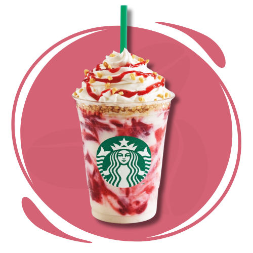

Mais que café, uma experiência.
Descubra cafés icônicos, sabores únicos e a energia perfeita para o seu dia.
Em Alta

5
FrappuccinoAvelã

5
FrappuccinoPistache

5
FrappuccinoMorango
Sobre nós

Nossa História
Desde o início, nossa paixão pelo café nos inspira a oferecer experiências únicas em cada xícara. Com grãos selecionados e preparo artesanal, buscamos unir qualidade, sabor e acolhimento em um único só lugar. Aqui, cada detalhe é pensado para transformar o seu momento de café em algo especial.
Nosso Propósito
Inspirar momentos de conexão e bem-estar por meio do café. Acreditamos que cada xícara pode aproximar pessoas, despertar idéias e transformar rotinas. Nosso compromisso é oeferecer qualidade, sustentabilidade e experiências que tornem o seu dia mais leve e especial.
Novidades

Moccha Morango

Moccha Chocolate

Moccha Café